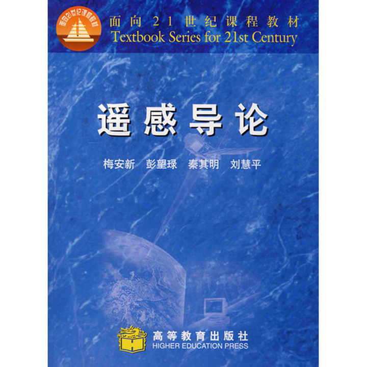

学校信息
学校名称：信阳师范学院联系人：张A
电话：0311-67267881
传真：0311-67267881
地址：河南省信阳市浉河区
网址：http://www.xynu.edu.cn/
邮箱：atransn@123.com
学校简介
信阳师范学院简称信阳师院（XYNU），是我国改革开放后河南省创办的第一所本科高校，是河南省重点建设的两所师范大学之一，是大别山地区一张闪亮的高等教育名片，被誉为“教师之摇篮 ”，被赞为“河南省最美的高校”“办在花园中的大学”“在绿水青山中自由自在学习的好大学”。
地理历史： 信阳师范学院坐落在中国茶都、红色之城信阳市贤山北麓、浉水之滨，与中国四大避暑胜地之鸡公山相近，散步就可到“长淮明珠”南湾湖，青山秀水，高低错落，红绿四季，诗情画意，茶香人靓，宜居宜学。美丽师院，来了就不想走的大学，春踏芳草看百花，夏栖绿荫听蝉鸣，秋闻桂香逗天鹅，冬拥白雪动诗情。 学校创建于1975年，时名开封师范学院（今河南大学）信阳分院。1978年经国务院批准为本科建制并改为现名，1979年成为首批学士学位授权单位。1998年经国务院学位委员会批准为硕士学位授权单位。
开设课程
-

网页设计
-
自然地理学
-

人文地理学
-

地理信息系统概率
-

高等数学
-

遥感概论